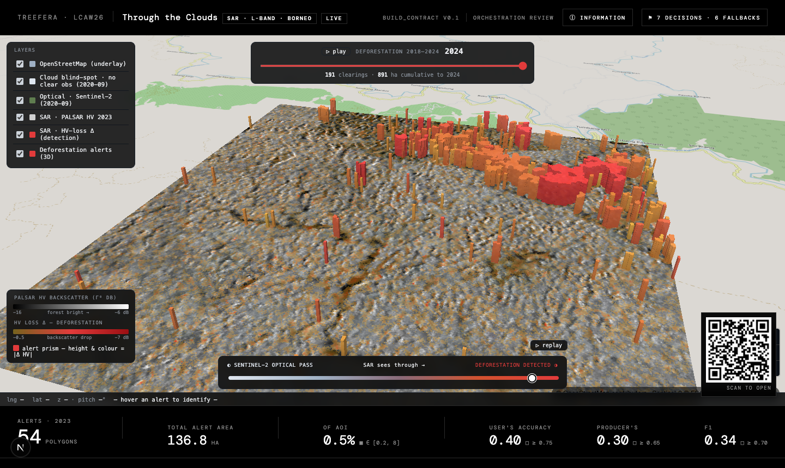
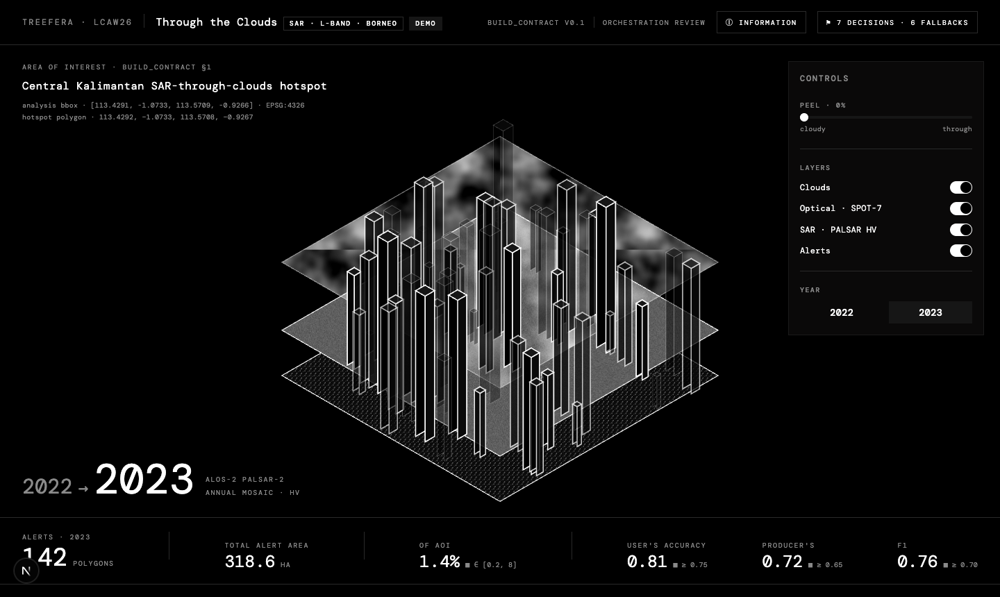

Detecting tropical deforestation that optical satellites can't reliably see — using L-band radar that shoots straight through cloud. Theme G: “See Through the Clouds (SAR).”
⏳ The live webapp is a temporary deployment and goes offline ~72 hours after the hackathon. This page is the permanent archive.
Borneo's peat-swamp forests sit under near-permanent cloud. Optical satellites (Landsat, Sentinel-2) — the backbone of deforestation monitoring like Hansen Global Forest Change — go blind for weeks at a time, so clearing is often caught months late or missed in the annual composite. Theme G asks: can Synthetic Aperture Radar, which is unaffected by cloud and works day or night, match or beat optical for finding forest loss?
Our answer: radar doesn't replace optical's spatial precision — but it wins decisively on timeliness. It images the loss on the pass it happens, through the cloud that hides it.
“Through the Clouds” is a classical, no-ML deforestation detector over a Central Kalimantan hotspot (113.43–113.57°E, 0.93–1.07°S), wrapped in an interactive “peel the clouds” web viewer with a multi-year time-scrubber.


Two co-registered annual PALSAR HV mosaics (year n−1 vs n), differenced in the radar domain. Forest has bright HV backscatter (volume scattering from the canopy); clearing collapses it. The pipeline is deliberately classical and inspectable — every threshold is a documented, tunable number, not a black box.
Run over all seven consecutive year-pairs (2017-18 … 2023-24), it produces a real 2018–2024 time-series. The per-year spread tracks Hansen's annual loss progression (object precision 0.44–1.00 across frames) — a stronger validation than any single-year pixel score.
We validate against Hansen GFC loss as a cross-reference, not ground truth — Hansen is itself optical and cloud-limited, so a SAR-yes / Hansen-no pixel is not automatically a false positive under persistent cloud.
conversations/ channel — proposing, reviewing, and reconciling changes in the open.The nine decisions that shaped the solution — full text on GitHub.
Differencing two annual radar mosaics beats ML here — no training labels, fully inspectable, and the signal lives in the temporal change, not a learned class.
Keep the detection build as one coherent linear pipeline rather than fragmenting it across six micro-agents that would thrash on shared state.
A mandatory check caught that PALSAR was already in γ⁰ dB — applying the textbook calibration formula would have double-calibrated it into garbage.
Computed the 0.2 ha MMU as ~3 pixels from the actual ~25 m resolution, correcting a wrong “32 pixel” figure in the contract.
Hansen is itself optical and cloud-limited, so we report agreement, not accuracy, and never treat SAR-only detections as automatic false positives.
Pragmatic environment call — move fast on the working toolchain rather than rebuilding a pinned 3.11 for marginal reproducibility gains.
Honesty over inflation: ship real numbers with their caveats rather than gate-game the metrics or hide the limitations of a cloud-limited reference.
The demo runs as a static bundle so it works at the booth with no backend; the database is an optional enhancement, never a hard dependency.
A 2.5D isometric reveal makes the cloud → SAR → detection story legible in a five-minute pitch, with alert height encoding backscatter loss.